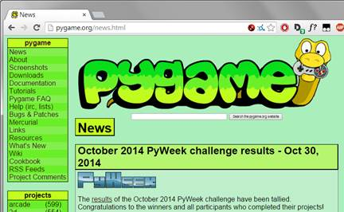
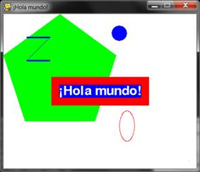
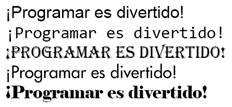
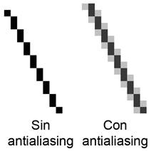
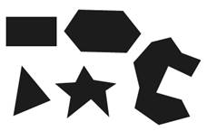
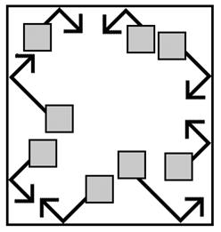

|
|
Capítulo 17 |
Gráficos y Animación |

Temas Tratados En Este Capítulo:
· Instalando Pygame
· Colores y Fuentes en Pygame
· Gráficos distorsionados y Anti-Aliasing
· Atributos
· Los Tipos de Datos pygame.font.Font, pygame.Surface, pygame.Rect y pygame.PixelArray
· Función Constructor
· Las Funciones de Dibujo de Pygame
· El Método blit() para Objetos Surface
· Eventos
· Animación
Hasta ahora, todos nuestros juegos han usado sólo texto. El texto es presentado en la pantalla como salida, y el jugador escribe texto mediante el teclado como entrada. Usar sólo texto hace que programar sea fácil de aprender. Pero en este capítulo crearemos juegos más emocionantes con gráficos y sonidos avanzados usando el módulo Pygame.
Los capítulos 17, 18 y 19 te enseñan a usar Pygame para crear juegos con gráficos, animación, entrada mediante el ratón y sonido. En estos capítulos escribiremos código fuente para programas simples que no son juegos pero demuestran los conceptos de Pygame que iremos aprendiendo. El juego en el capítulo 20 usará todos estos conceptos juntos para crear un juego.
Instalando Pygame
Pygame no viene con Python. Igual que Python, Pygame puede descargarse gratis. En un navegador, ve a la URL http://invpy.org/downloadpygame y descarga el archivo de instalación de Pygame para tu sistema operativo y versión de Python.
Abre el archivo de instalación luego de descargarlo, y sigue las instrucciones hasta concluir la instalación de Pygame. Para comprobar que Pygame esté correctamente instalado, escribe lo siguiente en la consola interactiva:
>>> import pygame
Si no aparece nada luego de haber pulsado la tecla intro, significa que Pygame se ha instalado correctamente. Si aparece el error ImportError: No module named pygame, intenta volver a instalar Pygame (y asegúrate de haber escrito import pygame correctamente).

Figura 17-1: El sitio web pygame.org.
El sitio web Pygame en http://pygame.org contiene información acerca de cómo usar Pygame, así como también otros juegos hechos con Pygame. La Figura 17-1 muestra el sitio Pygame.
Hola Mundo en Pygame
El primer programa Pygame es un nuevo programa “¡Hola Mundo!” como el que has creado al principio de este libro. Esta vez, usarás Pygame para hacer que aparezca “¡Hola mundo!” en una ventana gráfica en lugar de ser sólo texto.
Pygame no funciona bien con la consola interactiva. Por esta razón, es posible escribir programas Pygame pero no se puede enviar instrucciones una a la vez a Pygame a través de la consola interativa.
Los programas de Pygame tampoco utilizan la función input(). No hay entrada y salida de texto. En su lugar, el programa muestra su salida en una ventana dibujando gráficos y texto en la ventana. La entrada de un programa de Pygame proviene del teclado y el ratón a través de cosas llamadas eventos. Los eventos se explican en el próximo capítulo.
Código Fuente de Hola Mundo
Escribe el siguiente código en el editor de archivos, y guárdalo como pygameHolaMundo.py. Si obtienes errores luego de escribir el código, compara lo que has escrito con el código del libro usando la herramienta diff online en http://invpy.com/es/diff/pygameHolaMundo.
pygameHolaMundo.py
1. import pygame, sys
2. from pygame.locals import *
3.
4. # configurar pygame
5. pygame.init()
6.
7. # configurar la ventana
8. superficieVentana = pygame.display.set_mode((500, 400), 0, 32)
9. pygame.display.set_caption('¡Hola mundo!')
10.
11. # configurar los colores
12. NEGRO = (0, 0, 0)
13. BLANCO = (255, 255, 255)
14. ROJO = (255, 0, 0)
15. VERDE = (0, 255, 0)
16. AZUL = (0, 0, 255)
17.
18. # configurar fuentes
19. fuenteBásica = pygame.font.SysFont(None, 48)
20.
21. # configurar el texto
22. texto = fuenteBásica.render('¡Hola mundo!', True, BLANCO, AZUL)
23. textRect = texto.get_rect()
24. textRect.centerx = superficieVentana.get_rect().centerx
25. textRect.centery = superficieVentana.get_rect().centery
26.
27. # pintar un fondo blanco sobre la ventana
28. superficieVentana.fill(BLANCO)
29.
30. # dibujar un polígono verde sobre la superficie
31. pygame.draw.polygon(superficieVentana, VERDE, ((146, 0), (291, 106), (236, 277), (56, 277), (0, 106)))
32.
33. # dibujar algunas líneas azules sobre la superficie
34. pygame.draw.line(superficieVentana, AZUL, (60, 60), (120, 60), 4)
35. pygame.draw.line(superficieVentana, AZUL, (120, 60), (60, 120))
36. pygame.draw.line(superficieVentana, AZUL, (60, 120), (120, 120), 4)
37.
38. # dibujar un círculo azul sobre la superficie
39. pygame.draw.circle(superficieVentana, AZUL, (300, 50), 20, 0)
40.
41. # dibujar una elipse roja sobre la superficie
42. pygame.draw.ellipse(superficieVentana, ROJO, (300, 250, 40, 80), 1)
43.
44. # dibujar el rectángulo de fondo para el texto sobre la superficie
45. pygame.draw.rect(superficieVentana, ROJO, (textRect.left - 20, textRect.top - 20, textRect.width + 40, textRect.height + 40))
46.
47. # obtener un arreglo de píxeles de la superficie
48. arregloDePíxeles = pygame.PixelArray(superficieVentana)
49. arregloDePíxeles[480][380] = NEGRO
50. del arregloDePíxeles
51.
52. # dibujar el texto sobre la superficie
53. superficieVentana.blit(texto, textRect)
54.
55. # dibujar la ventana sobre la pantalla
56. pygame.display.update()
57.
58. # ejecutar el bucle del juego
59. while True:
60. for event in pygame.event.get():
61. if event.type == QUIT:
62. pygame.quit()
63. sys.exit()
Ejecutando el Programa Hola Mundo
Al ejecutar este programa, deberías ver aparecer una nueva ventana como la de la Figura 17-2.
Lo bueno de usar una ventana en lugar de una consola es que el texto puede aparecer en cualquier lugar de la ventana, no sólo a continuación del último texto que se ha mostrado. El texto puede ser de cualquier tamaño y color. La ventana es como un lienzo de pintura en blanco, y puedes dibujarle encima lo que quieras.
Importando el Módulo Pygame
Recorramos estas líneas de código y veamos lo que hacen.
1. import pygame, sys
2. from pygame.locals import *

Figura 17-2: El programa “Hola Mundo”.
Primero necesitas importar el módulo pygame para poder llamar a las funciones de Pygame. Puedes importar varios módulos en la misma línea separando los nombres de los mismos con comas. La línea 1 importa los módulos pygame y sys.
La segunda línea importa el módulo pygame.locals. Este módulo contiene muchas variables constantes que usarás con Pygame, tales como QUIT or K_ESCAPE (explicadas más adelante). Sin embargo, usando la fórmula from moduleName import * puedes importar el módulo pygame.locals de forma que no sea necesario escribir pygame.locals delante de cada una de las constantes del módulo.
Si usaras from sys import * en lugar de import sys en tu programa, tendrías que llamar a exit() en lugar de sys.exit() en tu código. Pero la mayoría de las veces es mejor usar el nombre completo de la función para tener claro en qué módulo se encuentra la función.
La Función pygame.init()
4. # configurar pygame
5. pygame.init()
Todos los programas de Pygame deben llamar a la función pygame.init() luego de haber importado el módulo pygame, pero antes de llamar a cualquier otra función de Pygame. Esto realiza los pasos necesarios para la inicialización de Pygame.
Tuplas
Los valores de tuplas son similares a las listas, excepto que utilizan paréntesis en lugar de corchetes. Además, como las cadenas, las tuplas no pueden ser modificadas. Por ejemplo, prueba escribir lo siguiente en la consola interactiva:
>>> spam = ('Vida', 'Universo', 'Todo', 42)
>>> spam[0]
'Vida'
>>> spam[3]
42
>>> spam[1:3]
('Universo', 'Todo')
Las Funciones pygame.display.set_mode() y pygame.display.set_caption()
7. # configurar la ventana
8. superficieVentana = pygame.display.set_mode((500, 400), 0, 32)
9. pygame.display.set_caption('¡Hola mundo!')
La línea 8 crea una ventana GUI al llamar al método set_mode() en el módulo pygame.display. (El módulo display es un módulo contenido dentro del módulo pygame. ¡El módulo pygame tiene hasta sus propios módulos!)
Un píxel es el punto más pequeño en la pantalla de tu computadora. Cada píxel puede iluminarse con cualquier color. Todos los píxeles de tu pantalla trabajan juntos para mostrar todas las imágenes que ves. Para crear una ventana de 500 píxeles de ancho por 400 píxeles de alto, se usa la tupla (500, 400) como el primer parámetro de pygame.display.set_mode().
Se usan tres parámetros para el método set_mode(). El primero es una tupla de dos enteros para el ancho y alto de la ventana, en píxeles. El segundo y tercer parámetro son opciones avanzadas que no trataremos en este libro. Sólo pasa 0 y 32 respectivamente.
La función set_mode() devuelve un objeto pygame.Surface (al cual aquí llamaremos objeto Surface por brevedad). Objeto es sólo otro nombre para un valor de un tipo de datos que tiene métodos asociados. Por ejemplo, las cadenas son objetos en Python porque tienen datos (la cadena en sí misma) y métodos (tales como lower() y split()). El objeto Surface representa la ventana.
Las variables guardan referencias a objetos igual que podrían guardar referencias a listas y diccionarios. La sección Referencias en el capítulo 10 explica lo que son las referencias.
Colores RVA
11. # configurar los colores
12. NEGRO = (0, 0, 0)
13. BLANCO = (255, 255, 255)
14. ROJO = (255, 0, 0)
15. VERDE = (0, 255, 0)
16. AZUL = (0, 0, 255)
Tabla 17-1: Colores y sus valores RVA.
|
Color |
Valores RVA |
|
Negro |
( 0, 0, 0) |
|
Azul |
( 0, 0, 255) |
|
Gris |
(128, 128, 128) |
|
Verde |
( 0, 128, 0) |
|
Lima |
( 0, 255, 0) |
|
Púrpura |
(128, 0, 128) |
|
Rojo |
(255, 0, 0) |
|
Turquesa |
( 0, 128, 128) |
|
Blanco |
(255, 255, 255) |
|
Amarillo |
(255, 255, 0) |
Hay tres colores primarios de luz: rojo, verde y azul. Combinando diferentes cantidades de estos tres colores (que es lo que hace tu pantalla hace) puedes formar cualquier otro color. En Pygame, las estructuras de datos que representan un color son tuplas de tres enteros. Se las llama valores de Color RVA (en inglés, RGB por red, green, blue).
El primer valor en la tupla es la cantidad de rojo en el color. Un valor de 0 significa que no hay rojo en este color, y un valor de 255 significa que está presente la máxima cantidad de rojo en el color. Los valores segundo y tercero corresponden a la cantidad de verde y azul respectivamente. Estos enteros forman una tupla RGB.
Por ejemplo, la tupla (0, 0, 0) no tiene nada de rojo, verde o azul. El color resultante es negro puro. La tupla (255, 255, 255) tiene el máximo de rojo, verde y azul, resultando en blanco.
La tupla (255, 0, 0) representa el máximo de rojo pero nada de verde o azul, luego el color resultante es rojo. Similarmente, (0, 255, 0) es verde y (0, 0, 255) es azul.
Puedes mezclar la cantidad de rojo, verde y azul para obtener cualquier matiz de cualquier color. La Tabla 17-1 tiene algunos colores comunes y sus valores RGB. La página web http://invpy.com/colors muestra otros valores de tuplas para diferentes colores.
Fuentes, y la Función pygame.font.SysFont()
18. # configurar fuentes
19. fuenteBásica = pygame.font.SysFont(None, 48)

Figura 17-3: Ejemplos de diferentes fuentes.
Una fuente es un conjunto completo de letras, números, símbolos y caracteres dibujados en el mismo estilo. La Figura 17-3 muestra la misma oración escrita en diferentes fuentes.
En nuestros juegos anteriores, sólo hicimos que Python imprimiera texto. El color, tamaño y fuente que se usaba para mostrar este texto estaba completamente determinado por tu sistema operativo. El programa Python no podía cambiar la fuente. Sin embargo, Pygame puede dibujar texto en cualquier fuente de tu computadora.
La línea 19 crea un objeto pygame.font.Font (llamado objeto Font para abreviar) llamando a la función pygame.font.SysFont(). El primer parámetro es el nombre de la fuente, pero le pasaremos el valor None para usar la fuente del sistema por defecto. El segundo parámetro es el tamaño de la fuente (que se mide en unidades llamadas puntos).
El Método render() para Objetos Font
21. # configurar el texto
22. texto = fuenteBásica.render('¡Hola mundo!', True, BLANCO, AZUL)
23. textRect = texto.get_rect()

Figura 17-4: Una vista aumentada de una línea sin antialiasing y otra con antialiasing.
El objeto Font que has guardado en la variable fuenteBásica tiene un método llamado render(). Este método devolverá un objeto Surface con el texto dibujado sobre él. El primer parámetro de render() es la cadena de texto a dibujar. El segundo parámetro es un Booleano para indicar si quieres utilizar antialiasing.
En la línea 22, pasa True para usar antialiasing. El antialiasing difumina ligeramente tu texto para que se vea más suave. La Figura 17-4 muestra (con píxeles agrandados) cómo se ve una línea con y sin antialiasing.
Atributos
24. textRect.centerx = windowSurface.get_rect().centerx
25. textRect.centery = windowSurface.get_rect().centery
El tipo de datos pygame.Rect (llamado Rect para abreviar) representa áreas rectangulares con un cierto tamaño y posición asociados. Para crear un nuevo objeto llama a la función pygame.Rect(). Los parámetros son enteros para las coordenadas XY de la esquina superior izquierda, seguidos por el ancho y el alto, todos en píxeles.
El nombre de la función con los parámetros se ve así: pygame.Rect(izquierda, arriba, ancho, alto)
De la misma forma que los métodos son funciones asociadas con un objeto, los atributos son variables asociadas con un objeto. El tipo de datos Rect tiene muchos atributos que describen el rectángulo que representa. La Tabla 17-2 es una lista de atributos de un objeto Rect llamado myRect.
Lo genial de los objetos Rect es que si modificas alguno de estos atributos, el resto de ellos se modificará automáticamente. Por ejemplo, si creas un objeto Rect que tiene 20 píxeles de ancho y 20 de alto, cuya esquina superior izquierda está en las coordenadas (30, 40), entonces la coordenada X del lado derecho si fijará automáticamente en 50 (porque 20 + 30 = 50).
Sin embargo, si cambias el atributo left (izquierda) con la línea myRect.left = 100, entonces Pygame cambiará automáticamente el atributo right (derecho) a 120 (porque 20 + 100 = 120). Todos los otros atributos para este objeto Rect también se actualizan.
Los Métodos get_rect() para Objetos pygame.font.Font y pygame.Surface
Nota que tanto el objeto Font (guardado en la variable texto en la línea 23) como el objeto Surface (guardado en la variable superficieVentana en la línea 24) tienen un método llamado get_rect(). Técnicamente, estos son dos métodos diferentes. Pero los programadores de Pygame les han dado el mismo nombre porque ambos hacen lo mismo y devuelven objetos Rect que representan el tamaño y posición del objeto Font o Surface en cuestión.
El módulo que importas es pygame, y dentro del módulo pygame están los módulos font y surface. Dentro de estos módulos están los tipos de datos Font y Surface. Los programadores de Pygame han decidido que los módulos empezaran con minúscula y los tipos de datos con mayúscula. Esto hace más fácil distinguir los tipos de datos de los módulos.
Funciones Constructor
Crea un objeto pygame.Rect llamando a la función pygame.Rect(). La función pygame.Rect() tiene el mismo nombre que el tipo de datos pygame.Rect. Las funciones que tienen el mismo nombre que su tipo de datos y crean objetos o valores de este tipo de datos se denominan funciones constructor.
El Método fill() para Objetos Surface
27. # pintar un fondo blanco sobre la ventana
28. superficieVentana.fill(BLANCO)
Queremos llenar toda la superficie almacenada en superficieVentana con el color blanco. La función fill() cubrirá completamente la superficie con el color que le pases como parámetro. (En este caso, la variable BLANCO corresponde al valor (255, 255, 255).
Algo importante a saber acerca de Pygame es que la ventana en la pantalla no cambiará cuando llames al método o a cualquiera de las otras funciones de dibujo. Éstas cambiarán al objeto Surface, pero el objeto Surface no será dibujado en la pantalla hasta que se llame a la función pygame.display.update().
Esto es porque modificar el objeto Surface en la memoria de la computadora es mucho más rápido que modificar la imagen en la pantalla. Es mucho más eficiente dibujar sobre la pantalla una vez luego de que todas las funciones hayan dibujado sobre el objeto Surface.
Las Funciones de Dibujo de Pygame
La función pygame.draw.polygon()
30. # dibujar un polígono verde sobre la superficie
31. pygame.draw.polygon(superficieVentana, VERDE, ((146, 0), (291, 106), (236, 277), (56, 277), (0, 106)))
Un polígono es una forma cuyos múltiples lados son líneas rectas. Círculos y elipses no son polígonos. La Figura 17-5 tiene algunos ejemplos de polígonos.
Tabla 17-2: Atributos Rect
|
pygame.Rect Atributo |
Descripción |
|
miRect.left |
Valor entero de la coordenada X del lado izquierdo del rectángulo. |
|
miRect.right |
Valor entero de la coordenada X del lado derecho del rectángulo. |
|
miRect.top |
Valor entero de la coordenada Y del lado superior del rectángulo. |
|
miRect.bottom |
Valor entero de la coordenada Y del lado inferior del rectángulo. |
|
miRect.centerx |
Valor entero de la coordenada X del centro del rectángulo. |
|
miRect.centery |
Valor entero de la coordenada Y del centro del rectángulo. |
|
miRect.width |
Valor entero del ancho del rectángulo. |
|
miRect.height |
Valor entero de la altura del rectángulo. |
|
miRect.size |
Una tupla de dos enteros: (width, height) |
|
miRect.topleft |
Una tupla de dos enteros: (left, top) |
|
miRect.topright |
Una tupla de dos enteros: (right, top) |
|
miRect.bottomleft |
Una tupla de dos enteros: (left, bottom) |
|
miRect.bottomright |
Una tupla de dos enteros: (right, bottom) |
|
miRect.midleft |
Una tupla de dos enteros: (left, centery) |
|
miRect.midright |
Una tupla de dos enteros: (right, centery) |
|
miRect.midtop |
Una tupla de dos enteros: (centerx, top) |
|
miRect.midbottom |
Una tupla de dos enteros: (centerx, bottom) |

Figura 17-5: Ejemplos de Polígonos.
La función pygame.draw.polygon() puede dibujar cualquier forma de polígono que le pases. Los parámetros, en orden, son:
· El objeto Surface sobre el que se dibujará el polígono.
· El color del polígono.
· Una tupla de tuplas que representa las coordenadas XY de los puntos a dibujar en orden. La última tupla se conectará automáticamente con la primera para cerrar la forma.
· Opcionalmente, un entero para el ancho de las líneas del polígono. Sin esto, el polígono será rellenado del color de la línea.
La línea 31 dibuja un pentágono verde en el objeto Surface.
La función pygame.draw.line()
33. # dibujar algunas líneas azules sobre la superficie
34. pygame.draw.line(superficieVentana, AZUL, (60, 60), (120, 60), 4)
35. pygame.draw.line(superficieVentana, AZUL, (120, 60), (60, 120))
36. pygame.draw.line(superficieVentana, AZUL, (60, 120), (120, 120), 4)
Los parámetros, en orden, son:
· El objeto Surface sobre el que se dibujará la línea.
· El color de la línea.
· Una tupla de dos enteros para las coordenadas XY de un extremo de la línea.
· Una tupla de dos enteros para las coordenadas XY del otro extremo de la línea.
· Opcionalmente, un entero para el ancho de la línea.
Si pasas 4 para el ancho, la línea tendrá 4 píxeles de ancho. Si no especificas este parámetro, tomará el valor por defecto de 1. Las tres llamadas a pygame.draw.line() en las líneas 34, 35 y 36 dibujan la “Z” azul en el objeto Surface.
La Función.draw.circle()
38. # dibujar un círculo azul sobre la superficie
39. pygame.draw.circle(superficieVentana, AZUL, (300, 50), 20, 0)
Los parámetros, en orden, son:
· El objeto Surface sobre el que se dibujará el círculo.
· El color del círculo.
· Una tupla de dos enteros para las coordenadas XY del centro del círculo.
· Un entero para el radio (es decir, el tamaño) del círculo.
· Opcionalmente, un entero para el ancho. Un ancho de 0 significa que el círculo será rellenado.
La línea 39 dibuja un círculo azul en el objeto Surface.
La Función pygame.draw.ellipse()
41. # dibujar una elipse roja sobre la superficie
42. pygame.draw.ellipse(superficieVentana, ROJO, (300, 250, 40, 80), 1)
La función pygame.draw.ellipse() es similar a la función pygame.draw.circle(). Los parámetros, en orden, son:
· El objeto Surface sobre el que se dibujará la elipse.
· El color de la elipse.
· Una tupla de cuatro enteros para los bordes izquierdo y superior, ancho y altura de la elipse.
· Opcionalmente, un entero para el ancho. Un ancho de 0 significa que la elipse será rellenada.
La línea 42 dibuja una elipse roja en el objeto Surface Surface.
La Función pygame.draw.rect()
44. # dibujar el rectángulo de fondo para el texto sobre la superficie
45. pygame.draw.rect(superficieVentana, ROJO, (textRect.left - 20, textRect.top - 20, textRect.width + 40, textRect.height + 40))
La función pygame.draw.rect() dibuja un rectángulo. El tercer parámetro es una tupla de cuatro enteros para los bordes izquierdo y superior, ancho y altura del rectángulo. En lugar de una tupla de cuatro enteros para el tercer parámetro, también puedes pasarle un objeto Rect.
En la línea 45, quieres que el rectángulo que dibujas esté 20 píxeles alrededor del rectángulo de texto. Es por esto que los bordes inquierdo y superior del rectángulo corresponden a los bordes izquierdo y superior de textRect menos 20. (Recuerda, restas porque las coordenadas disminuyen cuando te mueves hacia arriba y hacia la izquierda.) Y el ancho y la altura corresponden al ancho y a la altura de textRect más 40 (para compensar por el desplazamiento adicional de 20 píxeles de los bordes izquierdo y superior).
El Tipo de pygame.PixelArray
47. # obtener un arreglo de píxeles de la superficie
48. arregloDePíxeles = pygame.PixelArray(superficieVentana)
49. arregloDePíxeles[480][380] = NEGRO
La línea 48 crea un objeto pygame.PixelArray (llamado objeto PixelArray por brevedad). El objeto PixelArray es una lista de listas de tuplas de colores que representa el objeto Surface que le pasas.
La línea 48 pasa superficieVentana a pygame.PixelArray(), de modo que asignar NEGRO a arregloDePíxeles[480][380] en la línea 49 cambiará el color del píxel en las coordenadas (480, 380) a negro. Pygame modificará automáticamente el objeto superficieVentana con este cambio.
El primer índice en el objeto PixelArray es para la coordenada X. El segundo índice es para la coordenada Y. Los objetos PixelArray facilitan cambiar el color de píxeles individuales a un color específico.
50. del arregloDePíxeles
Crear un objeto PixelArray a partir de un objeto Surface bloquea al objeto Surface. Esto significa que no puede llamarse a la función blit() (descripta a continuación) sobre ese objeto Surface. Para desbloquear el objeto Surface, debes borrar el objeto PixelArray con el operador del. Si olvidas borrar el objeto PixelArray, recibirás un mensaje de error con el texto pygame.error: Surfaces must not be locked during blit.
El Método blit() Para Objetos Surface
52. # dibujar el texto sobre la superficie
53. superficieVentana.blit(texto, textRect)
El método blit() dibujará los contenidos de un objeto Surface sobre otro objeto Surface. La línea 53 imprime el objeto Surface “¡Hola mundo!” como texto y lo dibuja sobre el objeto Surface guardado en la variable superficieVentana.
El segundo parámetro de blit() especifica dónde en la superficie de superficieVentana se dibuja el texto. En este caso se pasa el objeto Rect que devuelve la llamada a text.get_rect() en la línea 23.
La Función pygame.display.update()
55. # dibujar la ventana sobre la pantalla
56. pygame.display.update()
En Pygame, nada se dibuja realmente sobre la pantalla hasta que se llama a la función pygame.display.update(). Esto es porque dibujar sobre la pantalla es lento comparado con dibujar sobre objetos Surface en la memoria de la computadora. No queremos actualizar la pantalla después de cada llamada a una función de dibujo, sino actualizar la pantalla una sola vez después de haber llamado a todas las funciones de dibujo.
Eventos y el Bucle del Juego
En juegos anteriores, todos los programas imprimían todo inmediatamente hasta que llegaban a una llamada a la función input(). En este punto, el programa se detenía y esperaba a que el usuario escribiera algo y presionara intro. Pero los programas de Pygame se ejecutan constantemente a través de un bucle llamado el bucle del juego. En este programa, todas las líneas de código en el bucle de juego se ejecutan alrededor de cien veces por segundo.
El bucle de juego es un bucle que constantemente busca nuevos eventos, actualiza el estado de la ventana y dibuja la ventana en la pantalla. Los eventos son objetos del tipo de datos pygame.event.Event, los cuales son generados por Pygame cada vez que el usuario pulsa una tecla, hace clic o mueve el ratón, o hace que ocurra algún otro evento. (Estos eventos se listan en la Tabla 18-1.)
58. # ejecutar el bucle del juego
59. while True:
La línea 59 es el comienzo del bucle del juego. La condición para la sentencia while se fija en True de modo que el bucle continúe para siempre. El único caso en que el bucle se detiene es si un evento causa que el programa termine.
La Función pygame.event.get()
60. for event in pygame.event.get():
61. if event.type == QUIT:
Llamar a pygame.event.get() recupera cualquier nuevo objeto pygame.event.Event (llamado objeto Event por brevedad) que haya sido generado desde la última llamada a pygame.event.get(). Estos eventos son devueltos como una lista de objetos Event. Todos los objetos Event tienen un atributo llamado type que nos dice de qué tipo de evento se trata. (En este capítulo sólo describiremos al tipo de evento QUIT. Los otros tipos de eventos serán cubiertos en el próximo capítulo.)
La línea 60 tiene un bucle for que itera sobre cada objeto Event en la lista devuelta por pygame.event.get(). Si el atributo type es igual a la variable constante QUIT, entonces sabes que el usuario ha cerrado la ventana y quiere terminar el programa.
Pygame genera el evento QUIT (el cual es importado del módulo pygame.locals module) cuando el usuario hace clic en el botón cerrar (usualmente una ×) de la ventana del programa. También se genera si la computadora está apagándose e intenta terminar todos los programas en ejecución. Sin importar la razón por la que se haya generado el evento QUIT, deberíamos terminar el programa.
La Función pygame.quit()
62. pygame.quit()
63. sys.exit()
Si el evento QUIT se ha generado, el programa debe llamar a ambas funciones pygame.quit() y sys.exit().
Este ha sido el simple programa “¡Hola mundo!” de Pygame. Hemos cubierto muchos nuevos temas con los que no habíamos tenido que lidiar en nuestros juegos anteriores. A pesar de que el código es más complicado, los programas Pygame pueden ser mucho más divertidos que los juegos de consola de texto. Aprendamos a continuación cómo crear juegos con gráficos animados que se mueven.
Animación
En este programa tenemos varios bloques diferentes rebotando contra los bordes de la ventana. Los bloques son de diferentes colores y tamaños, y se mueven sólo en trayectorias diagonales. Para animar los bloques (es decir, hacer que parezca que se están moviendo) desplazaremos los bloques unos pocos píxeles en cada iteración del bucle del juego. Esto hará parecer que los bloques se están moviendo por la pantalla.
Código Fuente del Programa Animación
Escriba el siguiente programa en el editor de archivo y guardarlo como animation.py. Si obtiene errores después de escribir este código en, compare el código que ha escrito para el código del libro con la herramienta de diferencias en línea en http://invpy.com/es/diff/animacion.
animación.py
1. import pygame, sys, time
2. from pygame.locals import *
3.
4. # Establece pygame
5. pygame.init()
6.
7. # Establece la ventana
8. ANCHOVENTANA = 400
9. ALTOVENTANA = 400
10. superficieVentana = pygame.display.set_mode((ANCHOVENTANA, ALTOVENTANA), 0, 32)
11. pygame.display.set_caption('Animación')
12.
13. # Establece las variables de dirección
14. ABAJOIZQUIERDA = 1
15. ABAJODERECHA = 3
16. ARRIBAIZQUIERDA = 7
17. ARRIBADERECHA = 9
18.
19. VELOCIDADMOVIMIENTO = 4
20.
21. # Establece los colores
22. NEGRO = (0, 0, 0)
23. ROJO = (255, 0, 0)
24. VERDE = (0, 255, 0)
25. AZUL = (0, 0, 255)
26.
27. # Establece la estructura de datos de los bloques.
28. b1 = {'rect':pygame.Rect(300, 80, 50, 100), 'color':ROJO, 'dir':ARRIBADERECHA}
29. b2 = {'rect':pygame.Rect(200, 200, 20, 20), 'color':VERDE, 'dir':ARRIBAIZQUIERDA}
30. b3 = {'rect':pygame.Rect(100, 150, 60, 60), 'color':AZUL, 'dir':ABAJOIZQUIERDA}
31. bloques = [b1, b2, b3]
32.
33. # Corre el ciclo de juego
34. while True:
35. # Busca un evento QUIT.
36. for evento in pygame.event.get():
37. if evento.type == QUIT:
38. pygame.quit()
39. sys.exit()
40.
41. # Dibuja el fondo negro sobre la superficie
42. superficieVentana.fill(NEGRO)
43.
44. for b in bloques:
45. # mueve la estructura de datos de bloques
46. if b['dir'] == ABAJOIZQUIERDA:
47. b['rect'].left -= VELOCIDADMOVIMIENTO
48. b['rect'].top += VELOCIDADMOVIMIENTO
49. if b['dir'] == ABAJODERECHA:
50. b['rect'].left += VELOCIDADMOVIMIENTO
51. b['rect'].top += VELOCIDADMOVIMIENTO
52. if b['dir'] == ARRIBAIZQUIERDA:
53. b['rect'].left -= VELOCIDADMOVIMIENTO
54. b['rect'].top -= VELOCIDADMOVIMIENTO
55. if b['dir'] == ARRIBADERECHA:
56. b['rect'].left += VELOCIDADMOVIMIENTO
57. b['rect'].top -= VELOCIDADMOVIMIENTO
58.
59. # Verifica si el bloque se movió fuera de la ventana
60. if b['rect'].top < 0:
61. # el bloque se movió por arriba de la ventana
62. if b['dir'] == ARRIBAIZQUIERDA:
63. b['dir'] = ABAJOIZQUIERDA
64. if b['dir'] == ARRIBADERECHA:
65. b['dir'] = ABAJODERECHA
66. if b['rect'].bottom > ALTOVENTANA:
67. # el bloque se movió por debajo de la ventana
68. if b['dir'] == ABAJOIZQUIERDA:
69. b['dir'] = ARRIBAIZQUIERDA
70. if b['dir'] == ABAJODERECHA:
71. b['dir'] = ARRIBADERECHA
72. if b['rect'].left < 0:
73. # el bloque se movió por la izquierda de la ventana
74. if b['dir'] == ABAJOIZQUIERDA:
75. b['dir'] = ABAJODERECHA
76. if b['dir'] == ARRIBAIZQUIERDA:
77. b['dir'] = ARRIBADERECHA
78. if b['rect'].right > ANCHOVENTANA:
79. # el bloque se movió por la derecha de la ventana
80. if b['dir'] == ABAJODERECHA:
81. b['dir'] = ABAJOIZQUIERDA
82. if b['dir'] == ARRIBADERECHA:
83. b['dir'] = ARRIBAIZQUIERDA
84.
85. # Dibuja el bloque en la superficie
86. pygame.draw.rect(superficieVentana, b['color'], b['rect'])
87.
88. # Dibuja la ventana en la pantalla
89. pygame.display.update()
90. time.sleep(0.02)

Figura 17-6: Una captura de pantalla alterada del programa Animación.
Cómo Funciona el Programa Animación
En este programa veremos tres bloques de diferentes colores moviéndose y rebotando contra las paredes. Para hacer esto, primero necesitamos considerar cómo queremos que los bloques se muevan.
Moviendo y Rebotando los Bloques
Cada bloque se moverá en una de las cuatro direcciones diagonales. Cuando el bloque golpee contra el costado de la ventana, deberá rebotar y moverse en una nueva dirección diagonal. Los bloques rebotarán como se muestra en la Figura 17-7.
La nueva dirección en la que se mueve un bloque luego de rebotar depende de dos cosas: en qué dirección se estaba moviendo antes de rebotar y contra qué pared ha rebotado. Hay un total de ocho posibles formas en las que un bloque puede rebotar: dos diferentes por cada una de las cuatro paredes.
Por ejemplo, si un bloque que está moviéndose hacia abajo y a la derecha rebota contra el borde inferior de la ventana, queremos que su nueva dirección sea hacia arriba y a la derecha.
Podemos usar objeto Rect para marcar la posición y el tamaño de cada bloque, una tupla de tres enteros para representar el color del bloque y un entero para representar en cuál de las cuatro direcciones diagonales el bloque está moviéndose.
En cada iteración de bucle de juego, ajustaremos las coordenadas X e Y del bloque en el objeto Rect. Además, en cada iteración dibujaremos todos los bloques en la pantalla en su posición actual. A medida que la ejecución del programa itere sobre el bucle de juego, los bloques irán moviéndose gradualmente a lo largo de la pantalla y darán la impresión de estar suavemente deslizándose y rebotando.

Figura 17-7: El diagrama de cómo rebotarán los bloques.
Creando y Configurando Pygame y la Ventana Principal
1. import pygame, sys, time
2. from pygame.locals import *
3.
4. # Establece pygame
5. pygame.init()
6.
7. # Establece la ventana
8. ANCHOVENTANA = 400
9. ALTOVENTANA = 400
10. superficieVentana = pygame.display.set_mode((ANCHOVENTANA, ALTOVENTANA), 0, 32)
En este programa verás que el alto y el ancho de la ventana son usados para más que sólo la llamada a set_mode(). Usaremos variables constantes de modo que si alguna vez quieres cambiar el tamaño de la ventana sólo tengas que cambiar las líneas 8 y 9. Dado que el ancho y la altura nunca cambian durante la ejecución del programa, una variable constante es una buena idea.
11. pygame.display.set_caption('Animación')
La línea 11 cambia el título de la ventana a 'Animación' llamando a pygame.display.set_caption().
Estableciendo Variables Constantes para las Direcciones
13. # set up direction variables
13. # Establece las variables de dirección
14. ABAJOIZQUIERDA = 1
15. ABAJODERECHA = 3
16. ARRIBAIZQUIERDA = 7
17. ARRIBADERECHA = 9
Usaremos las teclas en la almohadilla numérica del teclado para recordarnos qué número corresponde a cada dirección. Esto es similar a lo que hicimoe en el Ta Te Ti. 1 es hacia abajo y a la izquierda, 3 es abajo a la derecha, 7 es arriba a la izquierda y 9 es arriba a la derecha. Sin embargo, esto puede ser difícil de recordar, de modo que usaremos variables constantes en lugar de estos valores enteros.
Podríamos haber usado cualquier valor para estas direcciones en lugar de usar una variable constante. Por ejemplo, podrías usar la cadena 'abajoizquierda' para representar la dirección diagonal hacia abajo y a la izquierda. Sin embargo, si alguna vez te equivocaras al escribir 'abajoizquierda' (y escribieras por ejemplo 'sbajoizquierda'), Python no reconocería que tu intención fue escribir 'abajoizquierda' en lugar de 'sbajoizquierda'. Esto haría que tu programa se comportase en forma extraña, pero no ocasionaría un fallo del programa.
Pero si usas variables constantes y accidentalmente escribes el nombre SBAJOIZQUIERDA en lugar de ABAJOIZQUIERDA, Python se dará cuenta de que no existe una variable llamada SBAJOIZQUIERDA y este error causaría un fallo. Seguiría siendo un error bastante feo, pero al menos te darías cuenta inmediatamente y podrías arreglarlo.
19. VELOCIDADMOVIMIENTO = 4
Usamos una variable constante para determinar qué tan rápido se mueve el bloque. Un valor de 4 significa que el bloque se moverá 4 píxeles por cada iteración del bucle del juego.
Estableciendo Variables Constantes para los Colores
21. # Establece los colores
22. NEGRO = (0, 0, 0)
23. ROJO = (255, 0, 0)
24. VERDE = (0, 255, 0)
25. AZUL = (0, 0, 255)
Las líneas 22 a 25 establecen variables constantes para los colores. Recuerda que Python usa una tupla de tres valores enteros para las cantidades de rojo, verde y azul, a la cual llamamos valor RVA. Los enteros van desde 0 hasta 255.
Las variables constantes se usan por legibilidad. A la computadora no le preocupa si usas una variable llamada VERDE para el color verde. Simplemente es más fácil recordar que VERDE corresponde al color verde, en lugar de (0, 255, 0).
Estableciendo la Estructura de Datos del Bloque
27. # Establece la estructura de datos de los bloques.
28. b1 = {'rect':pygame.Rect(300, 80, 50, 100), 'color':ROJO, 'dir':ARRIBADERECHA}
Establece un diccionario como la estructura de datos que representa cada bloque. (El Capítulo 9½ introdujo los diccionarios.) El diccionario tendrá las claves 'rect' (con un objeto Rect por valor), 'color' (con una tupla de tres enteros por valor) y 'dir' (con una de las variables constantes de dirección por valor).
La variable b1 guardará la estructura de datos de un bloque. La esquina superior izquierda de este bloque en la coordenada X 300 y en la coordenada Y 80. Tiene un ancho de 50 píxeles y una altura de 100 píxeles. Su color es rojo y su dirección es ARRIBADERECHA.
29. b2 = {'rect':pygame.Rect(200, 200, 20, 20), 'color':VERDE, 'dir':ARRIBAIZQUIERDA}
30. b3 = {'rect':pygame.Rect(100, 150, 60, 60), 'color':AZUL, 'dir':ABAJOIZQUIERDA}
Las líneas 29 y 30 crean dos estructuras de datos similares para bloques que tienen diferente tamaño, posición, color y dirección.
31. bloques = [b1, b2, b3]
La línea 31 pone todas estas estructuras de datos en una lista, y guarda la lista en una variable llamada bloques.
La variable bloques guarda una lista. bloques[0] corresponde al diccionario guardado en b1. bloques[0]['color'] sería la clave 'color' en b1, de modo que la expresión bloques[0]['color'] se evaluaría a (255, 0, 0). De este modo puedes referirte a cualquiera de los valores de cualquiera de las estructuras de datos empezando con bloques.
Ejecutando el Bucle del Juego
33. # Corre el ciclo de juego
34. while True:
35. # Busca un evento QUIT.
36. for evento in pygame.event.get():
37. if evento.type == QUIT:
38. pygame.quit()
39. sys.exit()
Dentro del bucle del juego, los bloques se moverán alrededor de la pantalla en la dirección en la que traen y rebotarán cuando choquen contra alguno de los lados. También hay código para dibujar todos los bloques sobre la superficie superficieVentana y llamar a pygame.display.update().
El bucle for para comprobar todos los eventos en la lista devuelta por pygame.event.get() es el mismo que en nuestro programa “!Hola mundo!”.
41. # Dibuja el fondo negro sobre la superficie
42. superficieVentana.fill(NEGRO)
Primero, la línea 42 rellena toda la superficie con negro de modo que todo lo que ha sido dibujado anteriormente sea borrado.
Moviendo Cada Bloque
44. for b in bloques:
A continuación, el código debe actualizar la posición de cada bloque, así que itera sobre la lista de bloques. Dentro del bucle, nos referiremos al bloque actual simplemente como b, para que sea más fácil de escribir.
45. # mueve la estructura de datos de bloques
46. if b['dir'] == ABAJOIZQUIERDA:
47. b['rect'].left -= VELOCIDADMOVIMIENTO
48. b['rect'].top += VELOCIDADMOVIMIENTO
49. if b['dir'] == ABAJODERECHA:
50. b['rect'].left += VELOCIDADMOVIMIENTO
51. b['rect'].top += VELOCIDADMOVIMIENTO
52. if b['dir'] == ARRIBAIZQUIERDA:
53. b['rect'].left -= VELOCIDADMOVIMIENTO
54. b['rect'].top -= VELOCIDADMOVIMIENTO
55. if b['dir'] == ARRIBADERECHA:
56. b['rect'].left += VELOCIDADMOVIMIENTO
57. b['rect'].top -= VELOCIDADMOVIMIENTO
El nuevo valor que se asigna a los atributos top y left depende de la dirección del bloque. Si la dirección del bloque (que se guarda en la clave 'dir') es ABAJOIZQUIERDA o ABAJODERECHA, se aumentará el atributo top. Si la dirección es ARRIBAIZQUIERDA o ARRIBADERECHA, se reducirá el atributo top.
Si la dirección del bloque es ABAJODERECHA o ARRIBADERECHA, se aumentará el atributo left. Si la dirección es ABAJOIZQUIERDA o ARRIBAIZQUIERDA, se reducirá el atributo left.
El valor en que cambian estor atributos es el entero guardado en VELOCIDADMOVIMIENTO. VELOCIDADMOVIMIENTO guarda cuántos píxeles se mueven los bloques en cada iteración del bucle del juego, y fue establecido en la línea 19.
Comprobando si el Bloque ha Rebotado
59. # Verifica si el bloque se movió fuera de la ventana
60. if b['rect'].top < 0:
61. # el bloque se movió por arriba de la ventana
62. if b['dir'] == ARRIBAIZQUIERDA:
63. b['dir'] = ABAJOIZQUIERDA
64. if b['dir'] == ARRIBADERECHA:
65. b['dir'] = ABAJODERECHA
Luego de que las líneas 44 a 57 muevan el bloque, se comprobará si el bloque ha cruzado el borde de la ventana. Si es así, queremos que el bloque "rebote". En el código esto significa asignar un nuevo valor a su clave 'dir'. El bloque se moverá en una nueva dirección en la siguiente iteración del bucle del juego. Esto se ve como si el bloque hubiese rebotado contra el lado de la ventana.
En la sentencia if de la línea 60, consideramos que el bloque se ha movido por encima del borde superior de la ventana si el atributo top del objeto Rect del bloque es menor que 0. En ese caso, se cambia la dirección dependiendo de la dirección en la cual el bloque se estaba moviendo (ARRIBAIZQUIERDA o ARRIBADERECHA).
Cambiando la Dirección del Bloque que Rebota
Observa el diagrama de rebotes más atrás en este capítulo. Para llegar más allá del borde superior de la ventana, el bloque tiene que haber estado moviéndose en dirección ARRIBAIZQUIERDA o ARRIBADERECHA. Si el bloque estaba moviéndose en dirección ARRIBAIZQUIERDA, la nueva dirección (de acuerdo con el diagrama de rebotes) será ABAJOIZQUIERDA. Si el bloque venía moviéndose en la dirección ARRIBADERECHA, la nueva dirección será ABAJODERECHA.
66. if b['rect'].bottom > ALTOVENTANA:
67. # el bloque se movió por debajo de la ventana
68. if b['dir'] == ABAJOIZQUIERDA:
69. b['dir'] = ARRIBAIZQUIERDA
70. if b['dir'] == ABAJODERECHA:
71. b['dir'] = ARRIBADERECHA
Las líneas 66 a 71 actúan si el bloque ha cruzado el borde inferior de la ventana. Comprueban si el atributo bottom (no el atributo top) es mayor que el atributo en ALTOVENTANA. Recuerda que la coordenada Y comienza en 0 en el borde superior de la ventana y aumenta hasta llegar a ALTOVENTANA en el borde inferior.
El resto del código cambia la dirección basándose en lo que dice el diagrama de rebotes de la Figura 17-7.
72. if b['rect'].left < 0:
73. # el bloque se movió por la izquierda de la ventana
74. if b['dir'] == ABAJOIZQUIERDA:
75. b['dir'] = ABAJODERECHA
76. if b['dir'] == ARRIBAIZQUIERDA:
77. b['dir'] = ARRIBADERECHA
78. if b['rect'].right > ANCHOVENTANA:
79. # el bloque se movió por la derecha de la ventana
80. if b['dir'] == ABAJODERECHA:
81. b['dir'] = ABAJOIZQUIERDA
82. if b['dir'] == ARRIBADERECHA:
83. b['dir'] = ARRIBAIZQUIERDA
Las líneas 78 a 83 son similares a las líneas 72 a 77, pero comprueban si el lado izquierdo del bloque ha cruzado el borde izquierdo de la ventana. Recuerda, la coordenada X comienza en 0 en el borde izquierdo de la ventana y aumenta hasta ANCHOVENTANA en el borde izquierdo de la ventana.
Dibujando los Bloques en la Ventana en Sus Nuevas Posiciones
85. # Dibuja el bloque en la superficie
86. pygame.draw.rect(superficieVentana, b['color'], b['rect'])
Ahora que los bloques se han movido, deberían ser dibujados en sus nuevas posiciones en la superficie superficieVentana llamando a la función pygame.draw.rect(). Pasamos superficieVentana porque es el objeto Surface sobre el cual dibujaremos el rectángulo. Pasamos b['color'] porque es el color del rectángulo. Pasamos b['rect'] porque es el objeto Rect que contiene la posición y el tamaño del rectángulo a dibujar.
La línea 86 es la última línea del bucle for. Si quieres agregar nuevos bloques, sólo tienes que modificar la lista de bloques en la línea 31 y el resto del código seguirá funcionando.
Dibujando la Ventana en la Pantalla
88. # Dibuja la ventana en la pantalla
89. pygame.display.update()
90. time.sleep(0.02)
Luego de que cada bloque de la lista de bloques ha sido dibujado, se llama a pygame.display.update() para que superficieVentana se dibuje sobre la pantalla.
Luego de esta línea, la ejecución regresa al comienzo del bucle del juego y comienza el proceso otra vez. De esta forma, los bloques están constantemente moviéndose un poquito, rebotando contra las paredes y siendo dibujados sobre la pantalla en sus nuevas posiciones.
La llamada a la función time.sleep() está allí porque la computadora es capaz de mover, rebotar y dibujar los bloques tan rápido que si el programa corriera a toda velocidad los bloques no podrían verse. (Prueba ejecutar el programa comentando la línea time.sleep(0.02) para ver esto.)
Esta llamada a time.sleep() detendrá el programa por 0.02 segundos, o 20 milisegundos.
Dibujando Recorridos de Bloques
Comenta la línea 42 (la línea superficieVentana.fill(NEGRO)) agregando # al comienzo de la línea. Ahora ejecuta el programa.
Sin la llamada a superficieVentana.fill(NEGRO), no vuelves a pintar de negro la ventana completa antes de dibujar los rectángulos en su nueva posición. Los recorridos de los rectángulos aparecen porque los viejos rectángulos dibujados en iteraciones previas del bucle del juego ya no se borran.
Recuerda que los bloques no están realmente moviéndose. En cada iteración del bucle del juego, el código vuelve a dibujar la ventana completa con nuevos bloques desplazados unos pocos píxeles de la posición de los bloques anteriores.
Resumen
Este capítulo ha presentado una forma completamente nueva de crear programas de computadora. Los programas de los capítulos anteriores simplemente se detenían y esperaban a que el jugador ingresara un texto. Sin embargo, en nuestro programa de animación, el programa está constantemente actualizando las estructuras de datos de las cosas sin esperar información del jugador.
Recuerda cómo en nuestros juegos Ahorcado y Ta Te Ti teníamos estructuras de datos que representaban el estado del tablero, y estas estructuras de datos eran pasadas a una función dibujarTablero() para ser mostradas en la pantalla. Nuestro programa de animación es similar. La variable bloques contiene una lista de estructuras que representan bloques a dibujar en la pantalla, y estos son dibujados sobre la pantalla dentro del bucle del juego.
Pero sin las llamadas a input(), ¿cómo obtendremos información del jugador? En nuestro próximo capítulo, cubriremos cómo los programas pueden saber cuándo el jugador pulsa teclas del teclado. También aprenderemos un concepto llamado detección de colisiones.